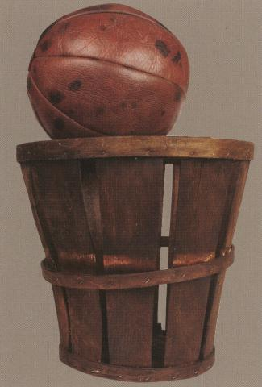
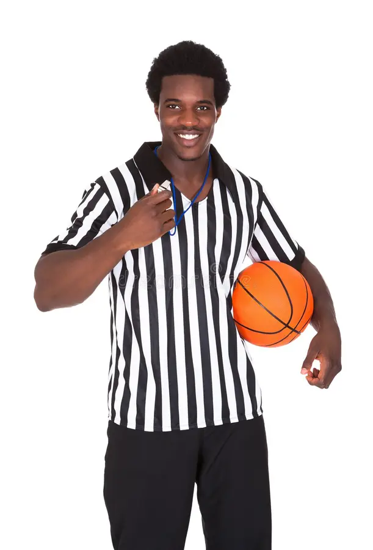

Les paniers de basket qui nous ont été inspirés sont utilisés pour la récolte de pêches. Ce sport a été inventé par un jeune professeur de sport en 1891 lors d'une froide journée pour maintenir ses étudiants actifs avec un nouveau jeu. Son but était de proposer une activité avec des règles simples mais complexe à pratiquer.
Le basket est un sport avec beaucoup de règles. Les plus basiques sont : ne pas avoir le droit de marcher sans dribbler, ne pas avoir le droit de s'arrêter de dribbler puis redribbler, ne pas pouvoir toucher son adversaire sous peine de faute. Chaque panier rapporte 2 points, les lancers francs 1 point et les tirs derrière la ligne à 3 points rapportent 3 points. Mais il existe aussi des règles un peu plus complexes comme devoir marquer en 24 secondes maximum, 8 secondes pour passer le milieu de terrain et 3 secondes en dessous du panier. Les joueurs n'ont pas le droit de passer le milieu de terrain puis revenir en arrière. De plus, au bout de 5 fautes, les joueurs sont exclus du terrain.
